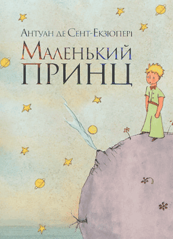
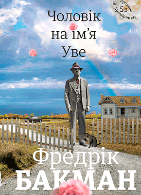
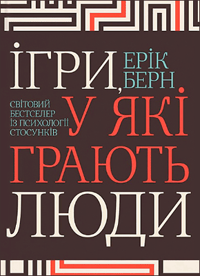

| № | Фото | Назва книги | Рік випуску | Про книгу |
|---|---|---|---|---|
| 1 |

|
Маленький принц — Антуан де Сент-Екзюпері | 1943 | Чарівна казка, яка досліджує глибинну сутність життя, любові та людської природи очима юного принца, який подорожує з планети на планету. |
| 2 |
|
Sapiens. Людина розумна — Ювал Ной Харарі | 2016 | Захопливе дослідження історії нашого виду Homo sapiens. Харарі запрошує читачів в інтелектуальну подорож, заглиблюючись у головні революції, які сформували людське існування, від когнітивної революції до сільськогосподарської революції і далі. |
| 3 |
|
Тріумфальна арка — Еріх Марія Ремарк | 1945 | Захоплюючий роман, дія якого відбувається в Парижі в буремні роки, що передували Другій світовій війні. Він розповідає про життя Равіка, німецького біженця і вправного хірурга, який знаходить розраду і мету в роботі на тлі політичних заворушень і особистих втрат. |
| 4 |

|
Чоловік на ім’я Уве — Фредрік Бакман | 2012 | Зворушливий і гумористичний роман, що розповідає історію Уве, буркотливого і, здавалося б, упертого старого, який знаходить несподівану мету і радість посеред свого буденного життя. |
| 5 |

|
Ігри, у які грають люди — Ерік Берн | 1964 | Книга, яка заглиблюється у світ людських взаємин і розкриває приховану динаміку, що стоїть за нашими повсякденними соціальними обмінами. Берн вводить поняття “ігри”, які є несвідомими моделями поведінки, в які ми вступаємо, щоб задовольнити певні психологічні потреби та отримати емоційне задоволення. |
- Звичайна кнопка
- Віджет для вибору кольору
- Поле для вибору календарної дати.
Поле для вибору одного варіанту
до 18 від 18
Поле для вибору декілкох варіантів
Гривня
Долар
Євро